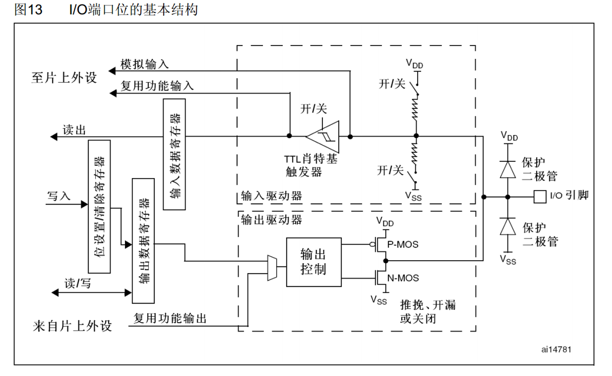
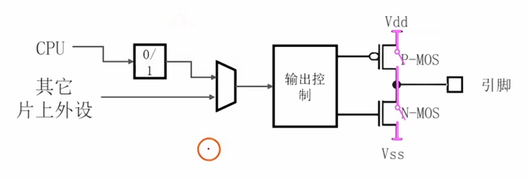
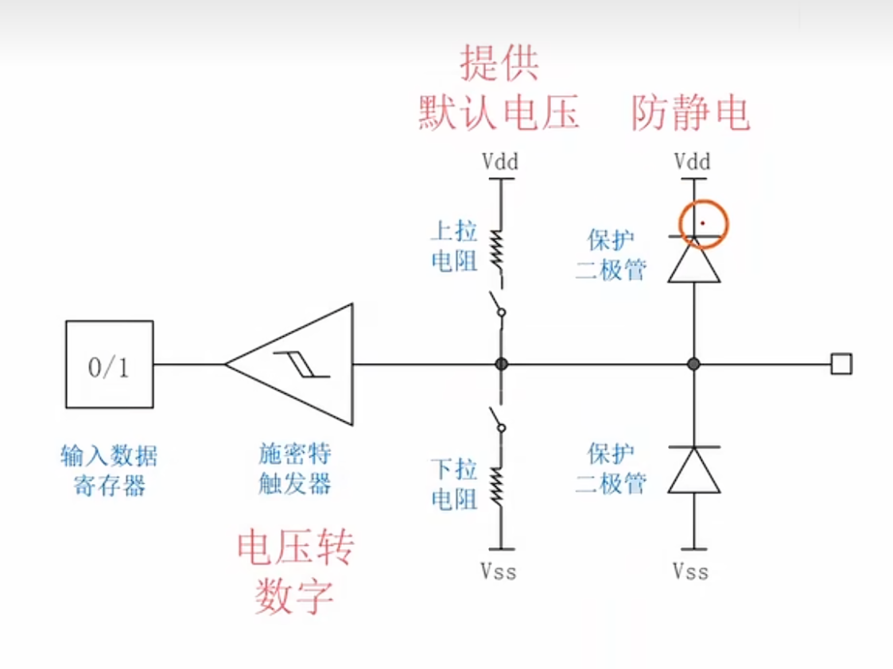
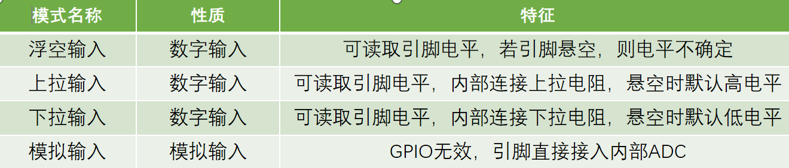
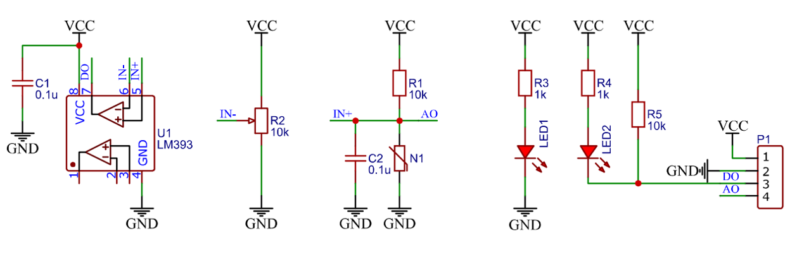

学习stm32的准备工作
根据嵌入式工作室2025年秋季招新题Robotics方向第一期完成，包括最基础的概念理解与代码要求。
第一题
1.什么是嵌入式系统？我们身边的嵌入式系统有哪些？
-
嵌入式系统由硬件和软件组成．是能够独立进行运作的器件。其软件内容只包括软件运行环境及其操作系统。硬件内容包括信号处理器、存储器、通信模块等在内的多方面的内容。相比于一般的计算机处理系统而言，嵌入式系统存在较大的差异性， 它不能实现大容量的存储功能，因为没有与之相匹配的大容量介质，大部分采用的存储介质有E-PROM、EEPROM 等， 软件部分以API编程接口作为开发平台的核心。
-
我们身边的嵌入式设备：手机、空调、冰箱、电视、路由器、车载电脑等。
2.单片机与STM32
-
单片机全称单片微型计算机，又称为微型控制器。它是一种集成电路芯片，把CPU、存储器（ROM和RAM）（ROM是只读存储器，用来存储程序；RAM是随机存取存储器，用来存储程序运行中产生的数据）、IO（输入输出模块） 几个模块组合在一起。
-
STM32是STMicroelectronics公司开发的基于ARM Cortx-m内核的32位微控制器。
3. 两种体系结构
| 体系名称 | 主要特点 | 典型应用 |
|---|---|---|
| 冯诺依曼结构 | 程序和数据都放在内存中，彼此不分离，共用同一条总线传输 | 通用计算机 |
| 哈佛结构 | 程序和数据彼此分离存储，分别有独立的总线，传输效率更高 | 单片机、嵌入式系统 |
- STM32属于哈佛结构
4.名词解释
-
MCU(Micro Control Unit)：微控制器，是指把中央处理器、存储器、定时/计数器、各种输入输出接口等都集成在一块集成电路芯片上的微型计算机，即单片机。
-
外设：连接到MCU的外部硬件模块，用于实现特定功能，如通信、模拟信号采集、计时等。
-
并行串行
- 并行：多个数据位同时传输，占用引脚多但速度快。
- 串行：数据位逐个传输，占用引脚少但速度慢。
-
同步异步
- 同步：信号发出方和接收方使用相同的时钟信号，需要一根额外的时钟信号线。
- 异步：无共用时钟，收发双方约定波特率和数据格式进行通信。
-
串口：串行通信接口的简称
-
GPIO(General Purpose Input/Output)：通用数字输入/输出端口，配置为输入模式用于采集外部期间信息，配置为输出模式用于控制外部器件工作。
-
DMA(Direct Memory Access)：直接存储器访问，允许外设直接与内存交换数据而不经过CPU，提高数据传输效率。
-
ADC(Analog-to-Digital Converter)：模数转换器，将模拟信号（如电平）转换为数字信号供MCU处理。
-
DAC(Digital-to-Analog Converter)：数模转换器，将数字信号转换为模拟信号输出。
-
TIM(Timer)：定时器/计数器，用于计时等时间相关功能。
-
RTC(Real-Time Clock)：实时时钟，提供独立的时间计数功能，通常具有后备电源，用于日历计时。
-
SDIO(Secure Digital Input/OUtput)：基于SD卡协议的扩展接口，支持SD卡存储以及SDIO设备(例如WiFi模块)。
-
USB(Universal Serial Bus)：通用串行总线，用于设备连接、数据传输与供电，支持高速通信。
-
CAN(Controller Area Network)：控制器局域网，一种可靠的分布式串行通信协议，常用于汽车与工业控制。
-
SPI(Serial Peripheral Interface)：串行外设接口，全双工同步串行通信协议，适用于告诉短距离通信。
-
IIC(Inter-Integrated Circuit)：一种同步、多主从结构的串行通信协议，使用两根线(SCL、SDA)进行通信。
-
USART(Universal Synchronous/Asynchronous Receiver/Transmitter)：通用同步异步收发器，支持同步与异步串行通信。
-
时钟：周期性的方波信号，在高低电平之间规律振荡。为MCU内部所有同步数字逻辑提供一个统一的、步调一致的工作节奏。
-
主频：主时钟频率，特指驱动CPU核心工作的那个时钟信号的频率。
相互关系总结
| 关系类型 | 内容 |
|---|---|
| MCU与外设 | MCU通过内部总线连接各类外设，实现数据收集处理与控制 |
| 通信方式 | 串行/并行是数据传输方式； 同步/异步是通信时钟机制； USART、IIC、SPI、CAN、USB都属于串行通信 |
| 外设的类型 | 通信类: USART、IIC、SPI、CAN、USB、SDIO。 模拟信号类: ADC、DAC。 时间类: TIM、RTC。 通用接口类: GPIO。 数据传输类: DMA。 |
第二题
1.结构体
1 | struct goods{ |
2. 开发结构、指针、位运算
开发结构
-
预处理器：编译过程的一个早期阶段，它在实际编译之前对源代码进行一些处理。预处理器指令以#开头，例如#include、#define、#ifdef等。处理器会执行以下操作：
-
包含头文件：#include指令会将指定的文件内容插入到该指令所在的位置。
-
宏替换：#define指令可以定义宏，预处理器会将代码中的宏展开为定义的内容。
-
条件编译：#if、#ifdef、#ifndef、#else、#elif和#endif指令可以根据条件决定是否编译某段代码。
-
-
头文件：通常以.h为扩展名，包含了函数声明、宏定义、类型定义等。头文件的主要作用是提供接口，使得不同的源文件可以共享这些声明和定义。在一个源文件中使用#include包含一个头文件时，预处理器会将头文件的内容插入到源文件中。
-
库函数：库函数是预先编写好的、可重用的函数集合，它们被编译并打包在库中。库分为静态库和动态库。C标准库提供了许多常用的库函数，如输入输出（stdio.h）、字符串操作（string.h）、数学函数（math.h）等。使用库函数时，需要包含相应的头文件，因为头文件中包含了这些函数的声明。然后，在链接阶段，链接器会将你的程序与库中的函数实现连接起来。
指针
-
指针和地址的关系：地址是内存单元的编号，每个字节都有唯一的地址；指针则是一个变量，用来存储这个地址，从而间接访问内存中的数据。
-
指针交换变量值：
1 | int a = 1,b = 0; |
位运算
-
二、八、十六进制
-
二进制：逢二进一，只用0与1表示数据。计算机中数据以二进制形式存放。
-
八进制：逢八进一，一位八进制代表三位二进制。
-
十六进制：逢十六进一，一位十六进制代表四位二进制。
-
-
位运算：
-
位即比特，是存储数据的最小单位，一个二进制位可以表示0和1两种状态。
-
在位一级进行运算，就是对字节或字终端实际位进行检测、设置或移位。
-
在嵌入式开发中的作用和优势：
-
位运算直接在CPU层面执行，速度极快。
-
将对字节的操作转化为对比特的操作，占用存储更少。
-
在嵌入式系统中，几乎所有硬件外设都通过寄存器来控制。这些寄存器中的每一个位都有特定含义。位运算符合作用逻辑。
-
-
-
问题解决（编写一个能够将一个形如"16,32"的字符串拆分成两个十进制的两位数后相加并转化为二进制数,然后输出的函数。）
1 | void PrintSumInBinary(){ |
第三题
知识总结
STM32的开发方式
-
基于寄存器的方式：效率最高，但由于STM32结构复杂、寄存器多而不好操作。
-
基于标准库（库函数）的方式：使用ST提供的封装好的函数间接配置寄存器，对开发人员友好。
-
基于HAL库的方式：用图形化界面配置STM32，方便操作，但隐藏了底层逻辑，不适合深入理解。
IO口的输出输入

IO口的基本结构- STM32F103C8T6 (LQFP48) 完整引脚对应表
| 引脚编号 | 引脚名称 | 主要功能（Prim） | 典型复用功能 / Alt Functions |
|---|---|---|---|
| 1 | VBAT | 后备电池供电 (RTC/备份寄存器) | - |
| 2 | PC13 | GPIO / 反篡改检测 (TAMPER) | - |
| 3 | PC14 | GPIO / 低速外部晶振输入 | OSC32_IN |
| 4 | PC15 | GPIO / 低速外部晶振输出 | OSC32_OUT |
| 5 | VSSA | 模拟地 | - |
| 6 | VDDA | 模拟电源 (3.3V) | - |
| 7 | NRST | 复位引脚 (低电平有效) | - |
| 8 | VSS_1 | 数字地 | - |
| 9 | VDD_1 | 数字电源 (3.3V) | - |
| 10 | PA0 | GPIO / ADC12_IN0 / TIM2_CH1 | WKUP (唤醒), USART2_CTS |
| 11 | PA1 | GPIO / ADC12_IN1 / TIM2_CH2 | USART2_RTS |
| 12 | PA2 | GPIO / ADC12_IN2 / TIM2_CH3 | USART2_TX |
| 13 | PA3 | GPIO / ADC12_IN3 / TIM2_CH4 | USART2_RX |
| 14 | VSS_2 | 数字地 | - |
| 15 | VDD_2 | 数字电源 (3.3V) | - |
| 16 | PA4 | GPIO / ADC12_IN4 / SPI1_NSS | DAC_OUT1 |
| 17 | PA5 | GPIO / ADC12_IN5 / SPI1_SCK | DAC_OUT2 |
| 18 | PA6 | GPIO / ADC12_IN6 / SPI1_MISO | TIM3_CH1 |
| 19 | PA7 | GPIO / ADC12_IN7 / SPI1_MOSI | TIM3_CH2 |
| 20 | PB2 | GPIO (BOOT1配置引脚) | - |
| 21 | PB10 | GPIO | I2C2_SCL, USART3_TX |
| 22 | PB11 | GPIO | I2C2_SDA, USART3_RX |
| 23 | VSS_3 | 数字地 | - |
| 24 | VDD_3 | 数字电源 (3.3V) | - |
| 25 | PB12 | GPIO | SPI2_NSS, I2S2_WS |
| 26 | PB13 | GPIO | SPI2_SCK, I2S2_CK |
| 27 | PB14 | GPIO | SPI2_MISO, TIM1_CH2N |
| 28 | PB15 | GPIO | SPI2_MOSI, TIM1_CH3N |
| 29 | PA8 | GPIO | USART1_CK, TIM1_CH1 |
| 30 | PA9 | GPIO | USART1_TX, TIM1_CH2 |
| 31 | PA10 | GPIO | USART1_RX, TIM1_CH3 |
| 32 | PA11 | GPIO | USART1_CTS, USB_DM |
| 33 | PA12 | GPIO | USART1_RTS, USB_DP |
| 34 | PA13 | SWDIO (调试接口) | JTMS |
| 35 | VSS_4 | 数字地 | - |
| 36 | VDD_4 | 数字电源 (3.3V) | - |
| 37 | PA14 | SWCLK (调试时钟) | JTCK |
| 38 | PA15 | GPIO | JTDI, SPI1_NSS |
| 39 | PB3 | GPIO | JTDO, SPI1_SCK |
| 40 | PB4 | GPIO | JTRST, SPI1_MISO |
| 41 | PB5 | GPIO | I2C1_SMBA, SPI1_MOSI |
| 42 | PB6 | GPIO | I2C1_SCL, TIM4_CH1 |
| 43 | PB7 | GPIO | I2C1_SDA, TIM4_CH2 |
| 44 | BOOT0 | 启动模式选择0 | - |
| 45 | PB8 | GPIO | TIM4_CH3, CAN_RX |
| 46 | PB9 | GPIO | TIM4_CH4, CAN_TX |
| 47 | VSS_5 | 数字地 | - |
| 48 | VDD_5 | 数字电源 (3.3V) | - |
输出模式

输出电路图| 模式名称 | 特点 | 通用 | 复用 |
|---|---|---|---|
| 推挽 | 由 STM32 对 GPIO 输出状态具有完全控制权，高低电平均由 MCU 决定 | 通用推挽 | 复用推挽 |
| 开漏 | 只有低电平具有驱动能力，通常需要外部上拉电阻配合使用；常用于总线通信 | 通用开漏 | 复用开漏 |
-
通用输出：CPU 直接向寄存器写入数据，控制 GPIO 的输出状态。
-
复用输出：CPU 通过外设模块向寄存器写入数据，间接控制 GPIO 的输出。
-
推挽输出：通过 P-MOS 和 N-MOS 两个 MOS 管共同驱动。寄存器写入 1 时，输出高电平（3.3V）；寄存器写入 0 时，输出低电平（0V）。
-
开漏输出：只有 N-MOS 管具备下拉能力。寄存器写入 0 时，输出低电平；寄存器写入 1 时，输出高电平时由外部上拉电阻决定。
-
适用场景：推挽输出适用于需要较强驱动能力的场景，如 LED、继电器等；开漏输出适用于与外部电路共用信号线的场景，如 I2C 通信等。
-
注意事项：推挽输出不能直接并联使用，否则会产生电流冲突；开漏输出通常需要外部上拉电阻来确保高电平状态。
- 设置输出模式函数：
1
2
3
4
5
6
GPIO_InitTypeDef GPIO_InitStructure;
GPIO_InitStructure.GPIO_Mode= GPIO_Mode_Out_PP; //推挽输出
GPIO_InitStructure.GPIO_Mode= GPIO_Mode_Out_OD; //开漏输出
GPIO_InitStructure.GPIO_Mode= GPIO_Mode_AF_PP; //复用推挽输出
GPIO_InitStructure.GPIO_Mode= GPIO_Mode_AF_OD; //复用开漏输出 - 设置引脚电平函数
1
2
3
4GPIO_WriteBit(GPIOx,GPIO_Pin_x,Bit_RESET); //将GPIOx端口的GPIO_Pin_x引脚输出低电平
GPIO_WriteBit(GPIOx,GPIO_Pin_x,Bit_SET); //将GPIOx端口的GPIO_Pin_x引脚输出高电平
GPIO_SetBits(GPIOx,GPIO_Pin_x); //将GPIOx端口的GPIO_Pin_x引脚输出高电平
GPIO_ResetBits(GPIOx,GPIO_Pin_x); //将GPIOx端口的GPIO_Pin_x引脚输出低电平 - 读取引脚电平函数
1
2GPIO_ReadOutputDataBit(GPIOx,GPIO_Pin_x);//读取GPIOx端口的GPIO_Pin_x引脚的输出电平，返回值为Bit_RESET或Bit_SET
GPIO_ReadOutputData(GPIOx);//读取GPIOx端口的全部输出电平，返回值为一个16位的无符号整数，每一位对应一个引脚的输出电平
- 设置输出模式函数：
-
输出速度
-
最大输出速度：向IO引脚交替写0和1且输出不失真的最快速度。
-
上升时间：电压从0升到3.3V所用时间。
下降时间：电压从3.3V降到0所用时间。
保持时间：电压保持3.3V所用时间。
上升时间和下降时间限制了最大输出速度。
-
STM32F103C8T6的输出速度
- 低速：2MHz
- 中速：10MHz
- 高速：50MHz
速度高时功耗也高，并且速度过高会对其他电子元件产生电磁干扰，因此实际使用中应当选取满足要求的最小值。
-
输入模式
-
外部输入低电压，CPU从寄存器中读取一个0；输入高电压，读取一个1。

输入电路图 -
输入模式分类

-
适用范围：下拉输入适用于需要默认低电平的场景；上拉输入适用于需要默认高电平的场景；浮空输入适用于不需要默认电平的场景；模拟输入适用于连接模拟信号采集设备的场景。
-
设置输入模式函数：
1
2
3
4
5GPIO_InitTypeDef GPIO_InitStructure;
GPIO_InitStructure.GPIO_Mode= GPIO_Mode_IPD; //下拉输入
GPIO_InitStructure.GPIO_Mode= GPIO_Mode_IPU; //上拉输入
GPIO_InitStructure.GPIO_Mode= GPIO_Mode_IN_FLOATING; //浮空输入
GPIO_InitStructure.GPIO_Mode= GPIO_Mode_AIN; //模拟输入 -
读取输入电平函数
1
2GPIO_ReadInputDataBit(GPIOx,GPIO_Pin_x);//读取GPIOx端口的GPIO_Pin_x引脚的输入电平，返回值为Bit_RESET或Bit_SET
GPIO_ReadInputData(GPIOx);//读取GPIOx端口的全部输入电平，返回值为一个16位的无符号整数，每一位对应一个引脚的输入电平
其余外接部件
-
LED：发光二极管，正向通电点亮，反向通电不亮
-
蜂鸣器
-
有源蜂鸣器：内部自带振荡源，将正负极接上直流电压即可持续发声，频率固定。
-
无源蜂鸣器：内部不带振荡源，需要控制器提供振荡脉冲才可发声，调整提供振荡脉冲的频率，可发出不同频率的声音。
-
-
按键：
- 常见的输入设备，按下导通，松手断开。
- 按键消抖：由于机械结构，按键在按下或松开时会产生短暂抖动，导致产生多次开关信号，为了不产生这种现象而作的措施就是按键消抖。按键消抖分为硬件消抖和软件消抖两种方式。
- 硬件消抖：在按键电路中加入RC滤波器或施密特触发器等电路元件，利用电路特性来滤除抖动信号。
- 软件消抖：在程序中加入延时或计数机制，在按键按下和松开时均执行延时并检测，只有当按键状态持续一定时间后才认为按键状态发生改变。
-
传感器模块：传感器元件（光敏电阻/热敏电阻/红外接收管等）的电阻会随外界模拟量的变化而变化，通过与定值电阻分压即可得到模拟电压输出，再通过电压比较器进行二值化即可得到数字电压输出。

传感器电路
调试方式
-
串口调试：通过串口通信，将调试信息发送到电脑端，电脑使用串口助手显示调试信息。
-
优势：可借助强大电脑来调试，显示各种信息。
劣势：需要连接电脑，携带不便；通常以信息流的方式呈现数据，对于持续变化的数据只能刷屏显示。
-
-
显示屏调试：直接将显示屏连接到单片机，将调试信息打印在显示屏上。
- 优势：直接接在单片机上，显示方式直接；可以覆盖刷新显示不断更新的数据。
劣势：屏幕太小显示的信息有限。 - OLED显示屏
-
OLED（Organic Light Emitting Diode）：有机发光二极管。
-
OLED显示屏：性能优异的新型显示屏，具有功耗低、相应速度快、宽视角、轻薄柔韧等特点。
-
0.96寸OLED模块：小巧玲珑、占用接口少、简单易用，是电子设计中非常常见的显示屏模块。
-
供电：3~5.5V，通信协议：I2C/SPI，分辨率：128*64。
-
- 优势：直接接在单片机上，显示方式直接；可以覆盖刷新显示不断更新的数据。
-
Keil调试模式：借助Keil软件的调试模式，可使用单步运行、设置断点、查看寄存器及变量等功能。
建立模板工程
-
新建存放工程的文件夹。
-
在Keil中选择该文件夹，为工程文件命名（最好说明工程的作用和目的），确认后选择器件型号。
-
在文件管理器中新建Start文件夹，将stm32的启动文件、内核寄存器描述文件、外围寄存器描述文件和时钟配置文件等粘贴入Start文件夹内；回到Keil5，将这些文件添加入工程分组。
工程分组和实际文件夹一定要一一对应，以免后续编译时找不到文件。
-
点击魔术棒，打开工程选项（Options for Target），在C/C++栏中添加头文件绝对路径。
-
将调试器设置为STLink，并选择自动复位。
-
新建User子文件夹，用于用户操作，在其中编写代码。
此时便可以通过直接配置寄存器操作STM32，以下操作为添加库函数
-
新建Library子文件夹，将STM32的库函数与库函数头文件添加到工程Library分组中
-
将conf文件和两个it文件添加到User文件夹中，用于程序调用库函数。
-
在Start\stm32f10x.h文件中找到
USE_STDPERIPH_DRIVER的条件编译，在工程选项-C/C++的Define栏目中粘贴该字符串，在下方将User和Library的头文件路径也添加好。 -
复用模板工程：
-
复制粘贴：将整个模板文件夹复制一份，并重命名为新项目的名字。
-
清理中间文件：打开新工程的文件夹，删除编译时自动生成的Listings和Objects文件夹（如果存在），以确保后续编译不会有旧文件的干扰。
-
修改文件名：将原有的uvprojx和uvoptx文件重命名为新项目的名字，并在Keil中打开该文件，确认工程名称已更新。
-
全局宏定义：在 C/C++ 的 Define 框中，如果新项目使用了不同的芯片型号或功能，需要修改对应的宏。
-
头文件路径：同样在 C/C++ 的 Include Paths 中，根据新项目的实际目录结构调整路径。
-
封装外设驱动
-
打开工程文件夹，新建Hardware文件夹，用于存储硬件驱动。
-
在Keil中打开工程管理（三个箱子），新建Hardware组，打开工程选项，在C/C++栏中添加Hardware路径。
-
将硬件驱动相关的代码在Hardware分组中存储，主体代码和函数/变量声明分别存储。